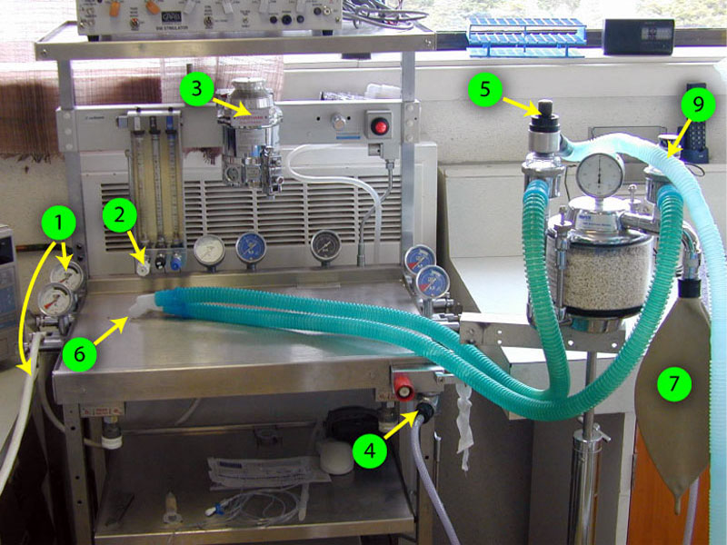

This check should be carried out each time before using the machine (movie 4.2MB).

Check that there is a source of oxygen attached (either a gas line or bottle) and that there is sufficient oxygen for the anaesthetic.
Turn on the flowmeter and check that the ball or bobbin stays steady (the bobbin should spin round but not jump up and down).
Check that there is a suitable vaporiser attached, that it contains enough halothane, that you know how to turn it on and that it does actually turn on - they sometimes get jammed up.
Ensure that there is a breathing circuit attached to the common gas outlet. You will use a circle system on both the dogs and sheep.
Close the pop off valve.
Put your thumb over the animal end of the circuit and put some gas into the circuit.
You can either fill the bag and watch it to check that it stays inflated, or squeeze it and feel for leaks / watch the pressure gauge for a drop in pressure. Normal animals should not need more than 20cm water to inflate their chests.
Keeping your thumb over the animal end of the circuit, open the pop off valve and squeeze the bag to make sure that the pop off valve opens properly.
Check that the scavenging tubing is connected to the pop off valve and to the wall connector at the other end.
There are other types of checks done at the start of the day's anaesthesia, assume everything was working then and just do this basic check.